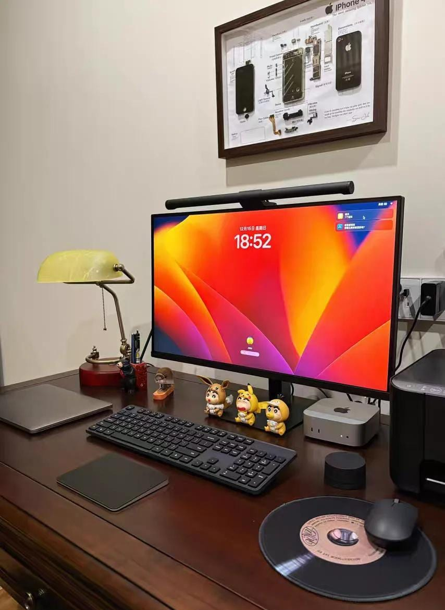

明基 PD2705U

明基专为设计师打造的 27 英寸 4K 显示器，99% sRGB 与 Rec.709 色域并附出厂校色报告，色彩准确可靠。支持 M-Book 苹果色彩模式、CAD/CAM 与动画设计模式，Type-C 65W 供电与 KVM 功能贴心，是平面设计与影像创作者的务实之选。
客观评测
PD2705U 定位专业设计市场，27 英寸 4K IPS 覆盖 99% sRGB 与 Rec.709，出厂逐台校色并附报告，色准 ΔE<3。明基为其开发 M-Book 模式贴近 MacBook 效果，另有 CAD/CAM、动画设计等模式。Type-C 支持 65W PD 供电与视频传输，并内置 KVM 方便双主机操作。300 尼特亮度与 60Hz 刷新率是短板，更适合设计影像而非影音娱乐。整体做工与售后完善。
主观点评
作为常年修图的人，我对它的信任来自那张出厂校色报告：屏幕开箱就是准的，不用担心偏色交稿翻车。M-Book 模式下和 MacBook 显示差异很小，组双屏很安心。它不是参数党眼里的水桶机，亮度和刷新率都平平，游戏影音只能算够用，但对设计工作者来说，「准」和「稳」才是核心诉求，它恰好把这两点做好了。
优点与不足
- 出厂校色并附报告，色彩开箱即用
- M-Book 模式对接 MacBook 色彩方便
- Type-C 供电与 KVM 提升工作效率
- 300 尼特亮度在明亮环境略显不足
- 60Hz 刷新率不适合游戏
- HDR 只是基础支持，效果有限
参数规格
| 尺寸 | 27 英寸（16:9） |
|---|---|
| 面板 | IPS |
| 分辨率 | 3840×2160（4K UHD） |
| 刷新率 | 60Hz |
| 响应时间 | 5ms GTG |
| 色域 | 99% sRGB、99% Rec.709 |
| 亮度 | 典型 300 尼特 |
| HDR | HDR10（基础支持） |
| 对比度 | 1000:1（典型） |
| 接口 | Type-C 65W PD、HDMI 2.0、DP 1.4、USB 3.1×2 |
| 支架 | 升降、俯仰、侧转、旋转，支持壁挂 100×100mm |
| 其他 | M-Book 模式、CAD/CAM 模式、KVM 切换、OSD 控制器 |
| 护眼 | 低蓝光、不闪屏、智慧调光（BI+） |